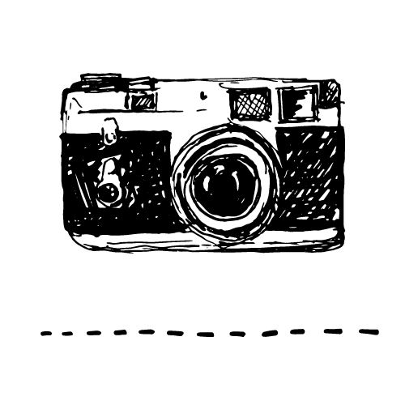
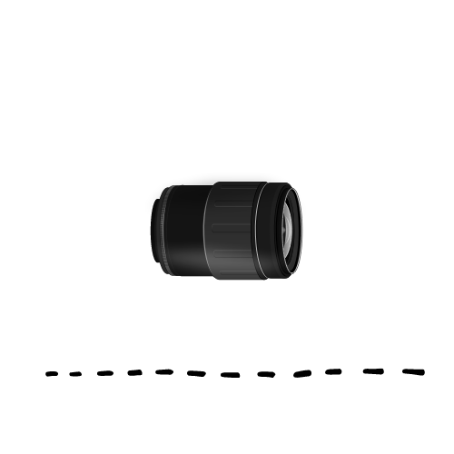
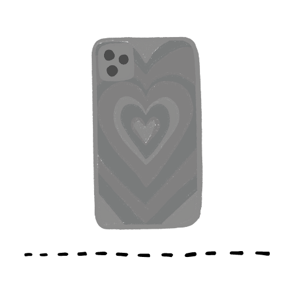

Esta es mi cámara profesional, la elegí porque tiene un sensor full-frame, y no tiene espejo, por lo que es más pequeña y liviana que otras cámaras de la misma gama. También revolucionó el mercado porque comparándola con otras cámaras con las mismas prestaciones, es muchísimo más económica.
Amo este lente porque es muy versátil. Es casi como tener muchos lentes en uno, y al ser full frame, su calidad es muy buena, claro que hay mejores, pero yo estoy súper conforme.
Me encanta hacer fotos con mi celular. A veces es mucho más cómodo y práctico, me encanta la espontaneidad que brinda poder sacar el celular en cualquier lugar e improvisar fotos. Así que mi opinión es claramente que el celular es un gran aliado que cualquier fotógrafo, y más aún si te gusta viajar.
